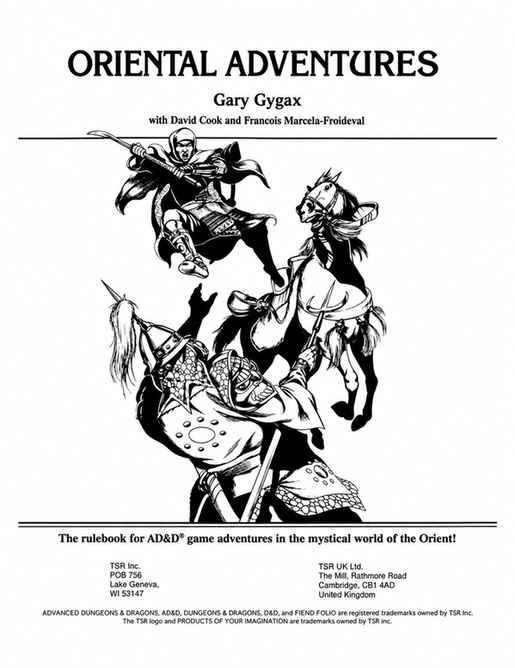

书名页、致谢与制作人员 · Title, Thanks, and Credits

东方冒险 Oriental Adventures Gary Gygax 著，与 David Cook、François Marcela-Froideval 合作
AD&D 游戏在神秘东方世界展开冒险的规则书。

东方冒险 Oriental Adventures Gary Gygax 著，与 David Cook、François Marcela-Froideval 合作
AD&D 游戏在神秘东方世界展开冒险的规则书。